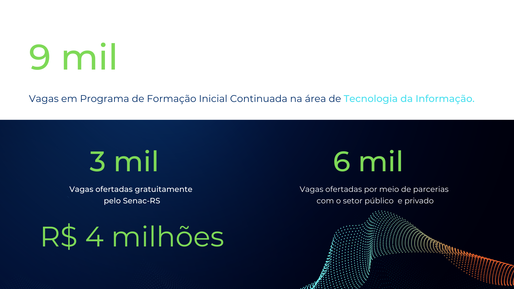

OBJETIVO Capacitar pessoas para atuarem no mercado de Tecnologia da Informação do Rio Grande do Sul, a fim de desenvolver habilidades técnicas necessárias para atuação como Desenvolvedores de Software. NOSSA ATUAÇÃO O Senac-RS atua há 75 anos na capacitação de profissionais para atuação no mercado de trabalho. Acompanhou a evolução das tecnologias ao longo do tempo, ofertando cursos atualizados e adequados às demandas das empresas do setor de comércio de bens, serviços e turismo. Ao longo dos últimos 5 anos, mais de 26 mil alunos foram capacitadas pelo Senac-RS, na área de Tecnologia da Informação, proporcionando a qualificação do setor.
Fonte: Associação Brasileira das Empresas de Tecnologia da Informação e Comunicação - BRASSCOM (2021)
